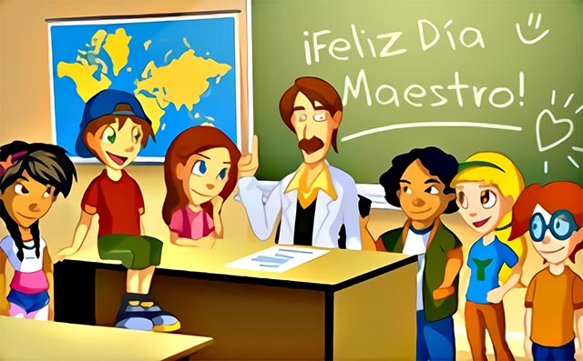

| |
|
|
CELEBRACIONES | |
|  |
En Ecuador, la fecha se toma como un homenaje a la figura del ilustre novelista y ensayista Juan María Montalvo Fiallos, nacido en la ciudad de Ambato el 13 de abril de 1832.
El Día del Maestro, además, es un recuerdo y reconocimiento a la honorable labor diaria que realizan cientos de educadores en la formación y desarrollo de los niños y jóvenes de nuestro país.
El Día del Maestro, fue instituido en nuestro país en el año 1920 por el presidente Alfredo Baquerizo Moreno, en honor al natalicio del escritor Juan María Montalvo, quien habría sido un personaje insigne en el ámbito cultural ecuatoriano.
En el resto de los países de Latinoamérica y el mundo, el Día del Maestro varía de fecha. La Organización de las Naciones Unidas para la Educación, la Ciencia y la Cultura (UNESCO) declaró, recién en el año 1994, que el día mundial del maestro sería el 5 de octubre de cada año, sin embargo, cada país ha tomado una fecha de referencia siguiendo sus tradiciones y su historia regional.